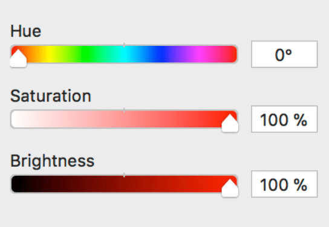
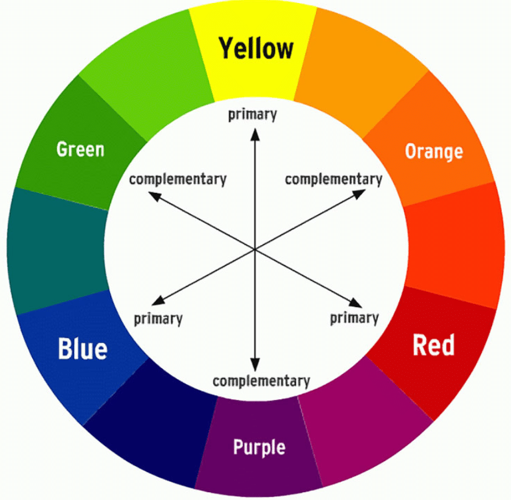

Урок 3
Цвет и градиенты
1. Как работает цвет
- Основные понятия:
- Цвет состоит из трех компонентов: Оттенок (Hue), Насыщенность
(Saturation), Яркость (Brightness).
- Цвета делятся на тёплые (например, красный, оранжевый) и холодные (например, синий, зелёный).
- Как выбрать цвет в Ibis Paint?
- Нажми на палитру цветов.
- Выбери нужный оттенок на круге.
- Настрой яркость и насыщенность с помощью ползунков.

2. Создание градиента
- Что такое градиент? Плавный переход между двумя или более цветами.
- Как сделать градиент?
- Выбери инструмент Градиент (на панели инструментов).
- Задай начальный и конечный цвет градиента.
- Проведи линию или настрой направление градиента.
- Совет: Используй градиенты для фонов, неба или световых эффектов.
Градиент 1
Градиент 2
Градиент 3
Градиент 4
Градиент 5
3. Цветовые гармонии
- Почему важны гармонии? Они помогают создать приятные сочетания цветов.
- Основные типы гармоний:
- Монохром — один цвет в разных оттенках (например, светло-синий + тёмно-синий).
- Комплементарные цвета — противоположные цвета на цветовом круге (например, синий и
оранжевый).
- Триада — три цвета, равномерно расположенные на цветовом круге (например, красный, жёлтый,
синий).
- Аналоговая гармония — соседние цвета на круге (например, зелёный, салатовый, жёлтый).
- Как использовать гармонии в Ibis Paint?
- Открой цветовой круг.
- Найди нужные сочетания для гармоничного рисунка.

4. Маскирование гаммы
- Что это? Позволяет ограничить использование определённой цветовой гаммы.
- Как применять?
- Создай новый слой и настрой цветовую гамму (например, только холодные цвета).
- Включи маскирование, чтобы все элементы рисунка сохраняли заданную палитру.
- Экспериментируй с разными гаммами для разных настроений в рисунке.
Задание: Попробуй создать рисунок с градиентным фоном, используя гармоничные цвета (монохром или
аналоговая гармония). 🎨